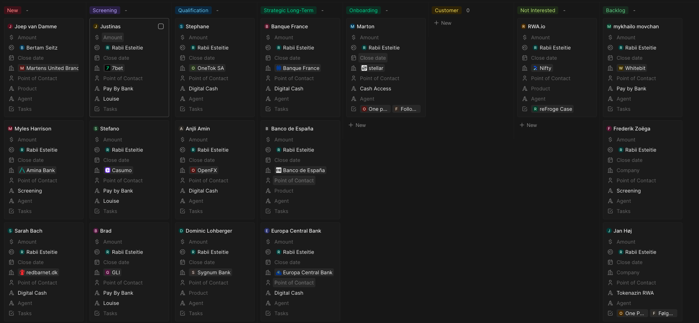
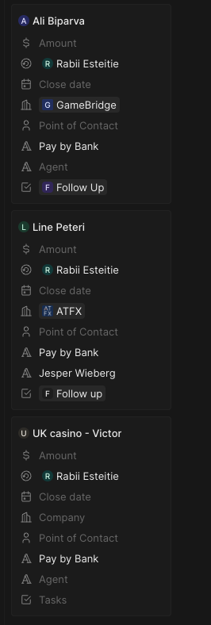
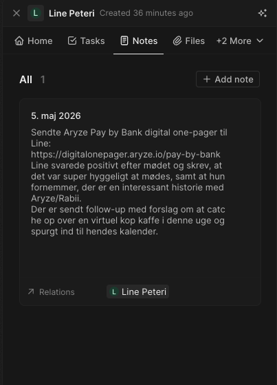

New lead
The lead has been added, but it has not yet been prioritised.
Move to Screening when the team decides to work it actively.Commercial process | Lead pipeline | 2026
The pipeline shows where each lead sits, who owns it, which product path it belongs to and what should happen next. The board should be used for status and movement, not long written explanations.
Pipeline board
Each column is a stage. A lead card moves right when the lead becomes more concrete. Side stages keep long-term, parked or closed leads out of the active sales flow.

Stages
The lead has been added, but it has not yet been prioritised.
Move to Screening when the team decides to work it actively.The team is trying to reach the lead, book a first meeting or confirm product fit.
Move to Qualification when first dialogue confirms relevance.Need, timing, use case, decision path and next action are being assessed.
Move forward only when the opportunity is concrete.The lead is qualified enough for KYB, technical setup, legal review or commercial setup.
Move to Customer when the lead is live or close enough to count as active.Important relationships that matter, but move slowly.
Leads that are active, live or close enough to count as customer status.
Leads that should stop unless timing or relevance changes.
Leads worth keeping, but not active focus right now.
Lead card
A lead card should be readable without opening it. It should show who the lead is, who owns it internally, which company it belongs to, the product path, any agent or referral, and the next task.

Inside a lead card
When a lead card is opened, the tabs give the working context. The board should stay clean; details belong inside the lead.
Write what happened, what was sent, what the lead answered and what should happen next.
Create tasks for follow-up, booking, sending material, checking with an agent or waiting for response.
Attach one-pagers, decks, agreements, screenshots or any document needed to understand the lead.
Working rule
